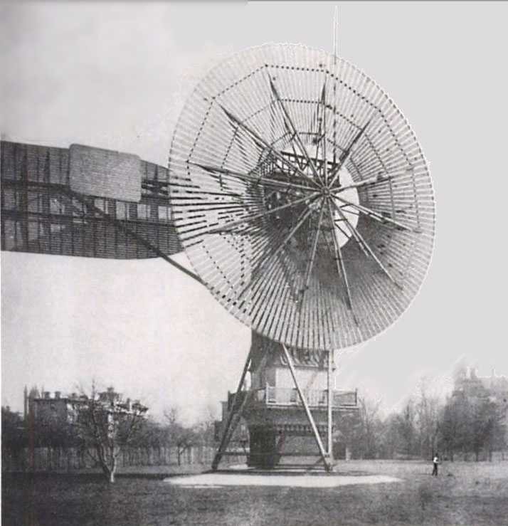
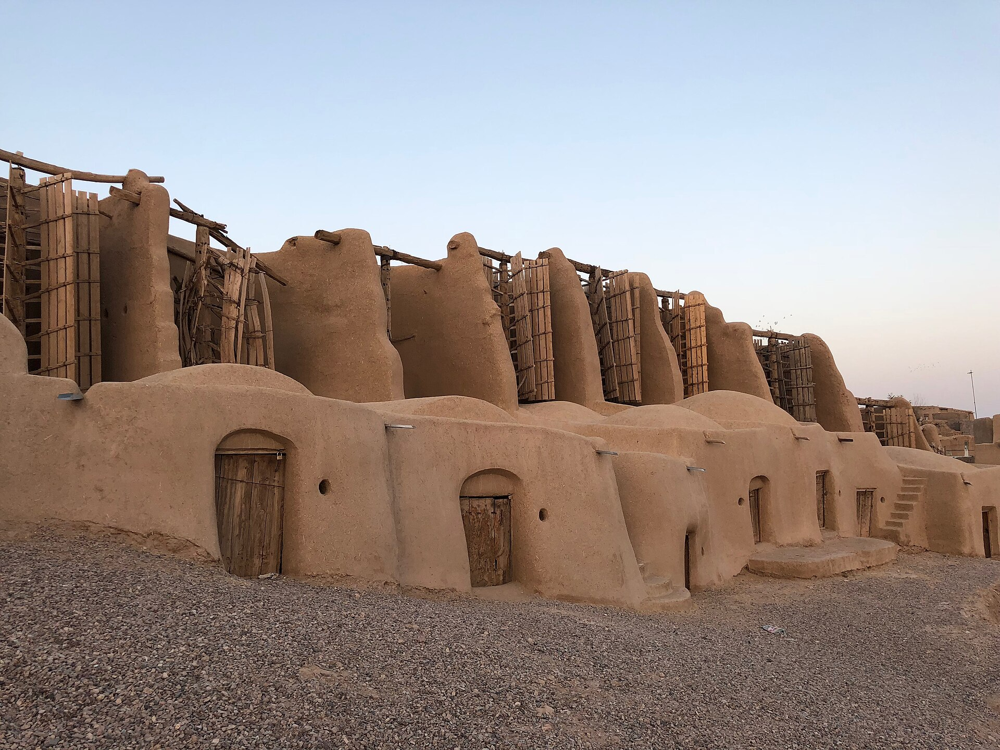
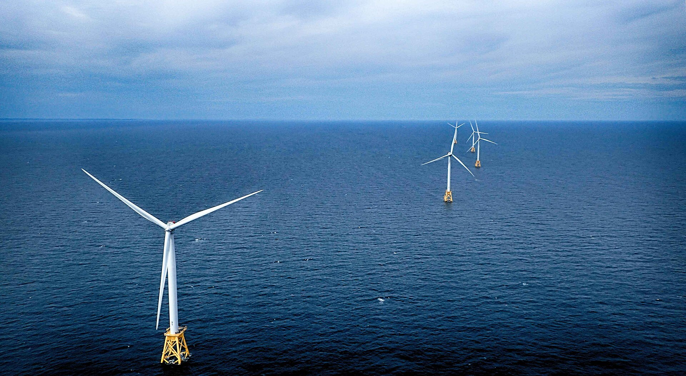
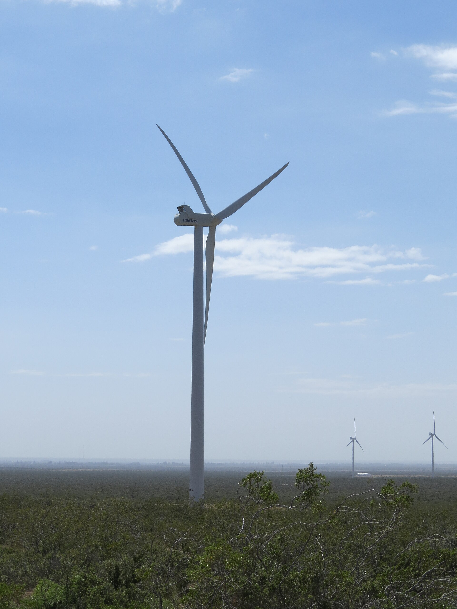
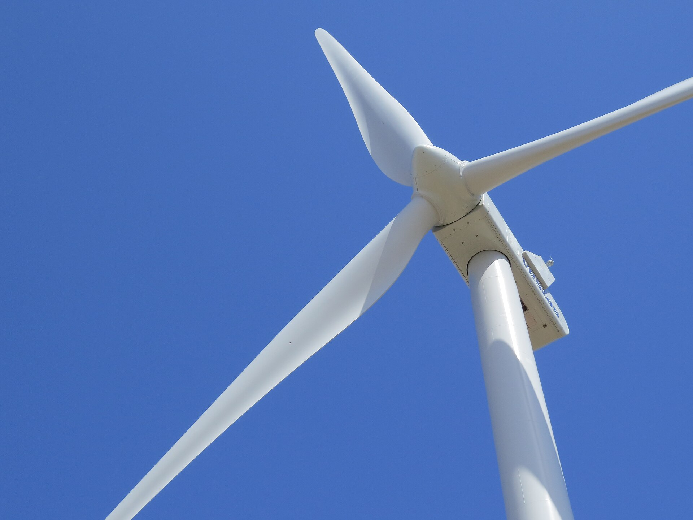
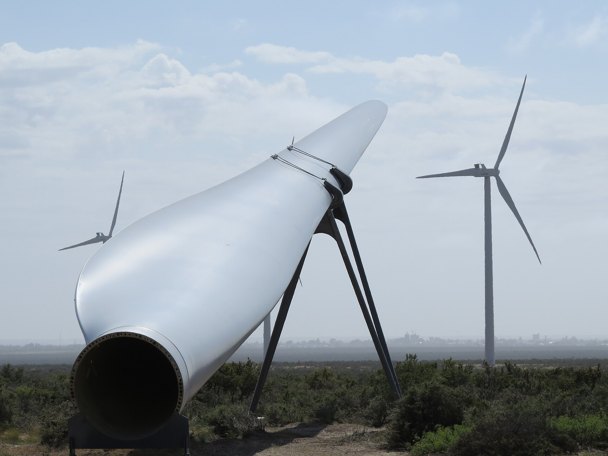
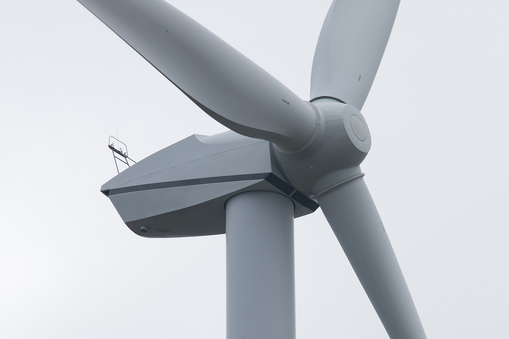
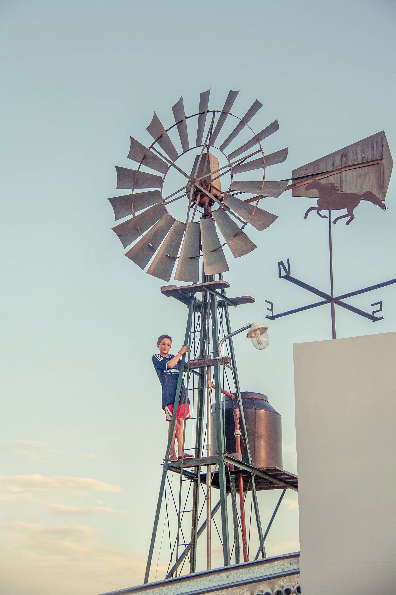
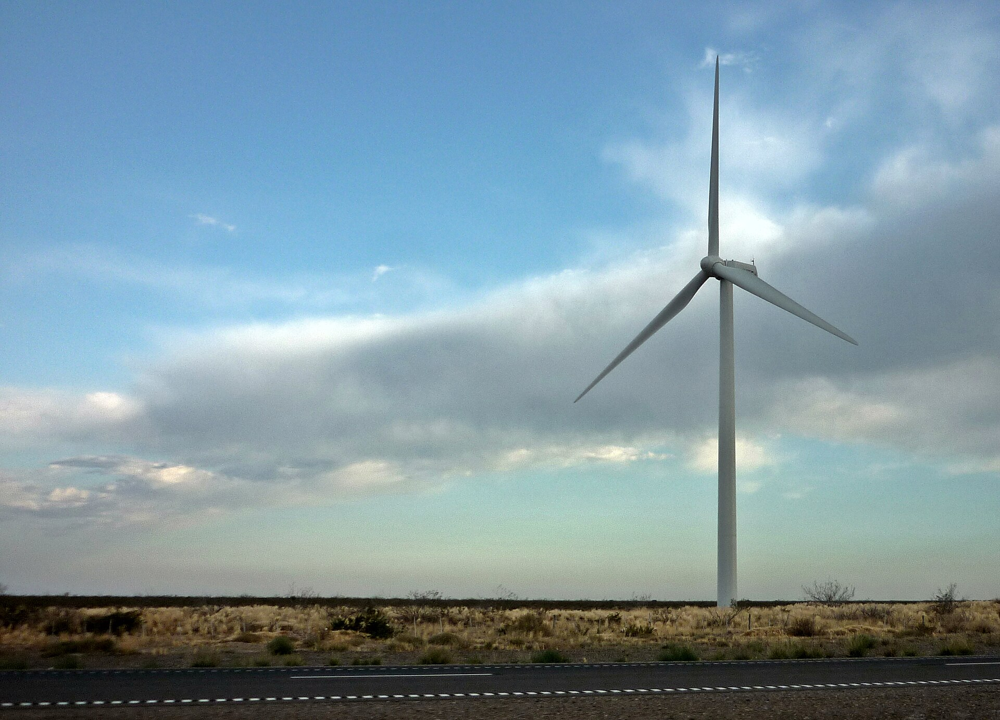

Cómo el viento se convierte en electricidad, y por qué la Patagonia argentina es uno de los mejores lugares del mundo para aprovecharlo.
El viento es aire en movimiento, y todo lo que se mueve lleva energía. Desde hace más de mil años, las personas usan esa energía para moler granos, bombear agua o mover barcos. Hoy la usamos sobre todo para algo nuevo: producir electricidad.
La energía eólica (de Eolo, el dios griego de los vientos) es la que se obtiene aprovechando la fuerza del viento. Es una energía renovable, porque el viento no se agota, y es limpia, porque al generar electricidad no quema combustibles ni emite gases de efecto invernadero.
En un mundo que necesita cada vez más electricidad y, al mismo tiempo, reducir la contaminación que causa el cambio climático, la energía eólica se volvió una de las fuentes que más crece: a fines de 2025 ya había en el planeta unos 1.300 gigavatios de potencia eólica instalada.
En este trabajo vamos a ver de dónde sale la energía del viento, cómo funciona un aerogenerador, cómo fue cambiando la tecnología a lo largo de la historia, qué lugar ocupa hoy la energía eólica en el mundo y en la Argentina, y cuáles son sus ventajas y desventajas.
Aunque parezca raro, la energía eólica es en realidad energía solar. El Sol no calienta la Tierra en forma pareja: el ecuador recibe más calor que los polos, y la tierra se calienta y se enfría más rápido que el mar. El aire caliente es más liviano y sube; el aire frío, más pesado, ocupa su lugar. Ese movimiento de masas de aire entre zonas de distinta presión es el viento. La rotación de la Tierra, las montañas y los océanos le dan su dirección y su fuerza en cada lugar.
Un aerogenerador transforma la energía cinética del viento en energía eléctrica. Sus palas tienen forma de ala de avión: cuando el viento pasa, se genera una fuerza de sustentación que las hace girar. El rotor gira lento, por eso en la góndola una caja multiplicadora aumenta las vueltas, y un generador convierte ese giro en electricidad, igual que la dínamo de una bicicleta. Después, un transformador eleva la tensión para mandarla por la red.
Figura 1. Partes principales de un aerogenerador de eje horizontal (esquema propio, no está a escala).
Un aerogenerador moderno empieza a girar con vientos de unos 3 a 4 m/s, llega a su potencia máxima alrededor de los 12 m/s y se frena solo, por seguridad, cuando el viento supera los 25 m/s (unos 90 km/h).


Según su eje. Los de eje horizontal son los más comunes: tienen tres palas, como una hélice, y deben girar para mirar al viento. Los de eje vertical (como los tipo Darrieus o Savonius) funcionan con viento de cualquier dirección, pero rinden menos y se usan sobre todo en instalaciones pequeñas.
Según su tamaño. Hay mini-eólicos de pocos kilovatios para casas, escuelas rurales o puestos aislados, y grandes aerogeneradores de varios megavatios para alimentar la red eléctrica.
Según dónde están. Los parques en tierra (onshore) son más baratos de construir y mantener. Los parques marinos (offshore) se instalan en el mar, donde el viento es más fuerte y constante; son más caros, pero permiten turbinas gigantes lejos de las casas.

En las últimas dos décadas la energía eólica creció muchísimo. Solo en 2025 se conectaron a la red 165 GW nuevos, un récord, y la potencia total del planeta llegó a unos 1.300 GW. China es por lejos el país líder: tiene casi la mitad de toda la potencia eólica del mundo.
La Argentina tiene uno de los mejores vientos del planeta. En la Patagonia el viento sopla fuerte y constante casi todo el año, y por eso algunos parques del sur logran rendimientos (factores de capacidad) que superan el 45 %, muy por encima del promedio mundial. También hay buen recurso en la costa de la provincia de Buenos Aires y en zonas de La Rioja.
En 2015 la Ley 27.191 fijó la meta de cubrir el 20 % del consumo eléctrico con energías renovables hacia 2025. Con programas como RenovAr (2016) se construyeron decenas de parques, y la eólica pasó a ser la renovable más importante del país.

El gran desafío es llevar esa energía hasta las ciudades. Los mejores vientos están lejos de donde vive la mayoría de la gente, así que la electricidad tiene que viajar cientos de kilómetros por las líneas de alta tensión del Sistema Argentino de Interconexión (SADI). Como esas líneas están casi al límite de su capacidad, ampliarlas es clave para que se puedan construir nuevos parques eólicos.
| Ventajas | Desventajas |
|---|---|
| Renovable: el viento no se agota. | Intermitente: si no hay viento, no hay electricidad; hacen falta otras fuentes o baterías de respaldo. |
| Limpia: no emite gases de efecto invernadero ni contamina el aire mientras funciona. | Impacto en la fauna: puede afectar a aves y murciélagos si el parque está mal ubicado. |
| No usa agua para generar electricidad, a diferencia de las centrales térmicas. | Impacto visual y ruido: a algunas personas les molesta cómo se ven y el zumbido de las palas. |
| Barata: hoy es una de las formas más económicas de producir electricidad. | Inversión inicial alta y necesidad de líneas de transmisión largas desde zonas lejanas. |
| Comparte el terreno: debajo de los molinos se puede seguir criando ganado o cultivando. | Reciclaje de palas: están hechas de materiales difíciles de reciclar al final de su vida útil. |
A lo largo de este trabajo vimos que la energía eólica es, en el fondo, energía del Sol que llega a nosotros en forma de viento, y que los aerogeneradores la transforman en electricidad sin quemar combustibles ni contaminar el aire. También vimos que es una tecnología con mucha historia, que empezó con los molinos persas y el molino de las pampas, y que hoy produce una parte cada vez más grande de la electricidad del mundo.
La energía eólica no es perfecta: depende de que sople el viento, tiene un impacto sobre el paisaje y la fauna, y sus palas son difíciles de reciclar. Por eso no alcanza sola: funciona mejor combinada con otras fuentes renovables, como la solar y la hidroeléctrica, y con sistemas para almacenar energía.
Para la Argentina es una gran oportunidad. Tenemos en la Patagonia uno de los vientos más fuertes y constantes del planeta, y aprovecharlo nos permite producir electricidad propia, más barata y más limpia. Cuidar el ambiente y tener energía para todos no son objetivos opuestos: la energía eólica demuestra que se pueden lograr al mismo tiempo.




